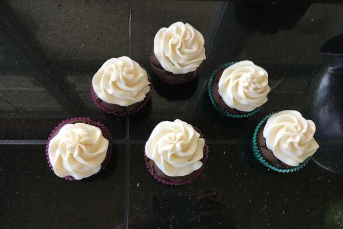

Simple 'N' Declicious Chocolate Cake

A very simple to make chocolate cake that I developed while trying to combine my chocolate and coffee cravings. It tastes so good no one will believe how easy it was! (It can be frosted with chocolate or coffee icing but I like it plain.).
Ingredients
- 1 cup white sugar
- 1 1/16 cups all-purpose flour
- 1 teaspoon baking soda
- 1 teaspoon salt
- 1/2 cup butter
- 1 egg
- 1 teaspoon vanilla extract
- 1 cup cold, strong, brewed coffee
Directions-
- Step 1: Preheat oven to 350 degrees F (175 degrees C). Grease and flour an 8-inch pan (see Editor's Note). Sift together flour, cocoa, baking soda and salt. Set aside.
- Step 2: In a medium bowl, cream butter and sugar until light and fluffy. Add egg and vanilla and beat well. Add flour mixture, alternating with coffee. Beat until just incorporated.
- Step 3: Bake at 350 degrees F (175 degrees C) for 35 to 45 minutes, or until a toothpick inserted into the cake comes out clean. Allow to cool before frosting.
Notes:
To bake this recipe as cupcakes, line a 12-cup muffin pan with cupcake liners. Divide batter into pan and bake in the preheated oven until a toothpick inserted in a center cupcake comes out clean, 15 to 18 minutes.